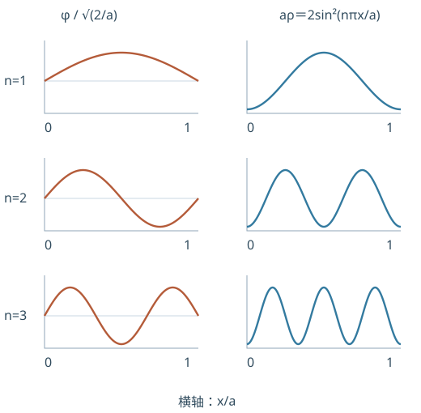

17.5 一维定态问题
对照教材纸273—281，把上一节流程用于三个模型：无限深势阱求离散能级，谐振子理解零点能，有限势垒计算反射与透射。各模型都先写势能和边界，再解释公式的条件。
一、无限深方势阱：能级由边界筛出来
质量m的粒子限制在0<x<a，阱内V＝0，阱外V→∞；阱壁不可穿透，φ(0)＝φ(a)＝0。这是理想模型，不是有限势阱的精确边界。无限壁处不额外要求φ′与阱外零函数的导数连续，否则会误排除全部非零解。
阱内定态方程 −ℏ²φ″/(2m)＝Eφ。E＞0时令k＝√(2mE)/ℏ，通解为φ＝A sin kx＋B cos kx。接着逐项代边界：
- φ(0)＝0给B＝0。
- φ(a)＝A sin ka＝0。A不能为0，否则总概率为0；故ka＝nπ。
- n取1,2,…。负n只改变整体符号，不给新态。E＝0时应另解φ″＝0，通解Ax＋B受两个端点条件后只能为0，也没有可归一化态；不能仅把k＝0代入已选的正能量通解作全部论证。
- 归一化要求 |A|²∫₀ᵃsin²(nπx/a)dx＝1。积分为a/2，故选A＝√(2/a)。
阱外φₙ＝0；n＝1,2,…；
Eₙ＝n²π²ℏ²/(2ma²)＝n²h²/(8ma²)。
能量量子化来自边界限制，不是求完连续能量后再人为规定“只能取整数”。从分部积分也可见 E＝[ℏ²/(2m)]∫₀ᵃ|φ′|²dx≥0，且等号只能给不合条件的零函数，所以不存在负能或零能的物理态。
两端为节点，阱宽a容纳n个半波长：a＝nλₙ/2，λₙ＝2a/n。由p＝h/λₙ和低速E＝p²/(2m)，得Eₙ＝n²h²/(8ma²)。注意这里是两端固定的直线段，和17.1圆环的整波长条件不同。该方法与方程、边界推导相互核验。
二、节点、概率与零点能
φₙ在阱内有n−1个节点，概率密度ρₙ＝(2/a)sin²(nπx/a)有n个峰。完整定态为Ψₙ＝φₙe−iEₙt/ℏ，密度不随时间变。每个能级在这个一维模型中非简并，即同一能级只有一个独立本征态（整体相位不算新态）。

基态n＝1，E₁＞0，称零点能。若粒子既被限于有限区域又具有严格零动量，会与不确定关系矛盾；这里的精确E₁仍来自方程和边界，不能把不确定关系的粗估直接当作其精确推导。
区间概率可统一积分：
0≤u≤v≤a。
例如左半为1/2，与17.2的n＝1例互通。⟨x⟩＝a/2，⟨x²⟩＝a²[1/3−1/(2n²π²)]，故Δx＝a√[1/12−1/(2n²π²)]；还可由⟨p⟩＝0、⟨p²⟩＝(nπℏ/a)²检验不确定关系。平均动量为0不表示动能为0。
“n很大趋近经典”怎样理解才准确
教材讲高n时概率近乎均匀、能级可视为连续。精确密度仍在0到2/a间振荡，并非逐点变为1/a；当观察区间远大于a/n时，快速振荡在区间积分中平均，才接近经典均匀分布。
对固定a、m，相邻能级差 Eₙ₊₁−Eₙ＝(2n＋1)E₁反而增大；变小的是相对间隔(Eₙ₊₁−Eₙ)/Eₙ＝(2n＋1)/n²。经典近似需结合观察尺度、能量精度或宏观参数，不能把高n说成固定势阱的绝对能级间隔趋零。
①第二激发态是n＝3，故与基态能量比E₃/E₁＝9，不是4。②若E₁＝2 eV，则E₂＝8 eV、E₃＝18 eV；若允许通过发光完成3→2，光子能量为10 eV，不是能量比或能量之和。阱宽加倍、n不变时各能量变为原来的1/4。
三、一维谐振子：能级等间隔，基态从n＝0开始
稳定平衡点附近，势能展开为V≈V(0)＋Kx²/2，取V(0)＝0、K＝mω²，ω＝√(K/m)。这里K为劲度系数，勿与动能记号混淆。小振动适用；大位移下非谐项可能重要。
教材略去一般求解过程，给出本征值与厄米多项式。可先用无量纲变量ξ＝αx、α＝√(mω/ℏ)、ε＝E/(ℏω)，把方程变为φ″(ξ)＋(2ε−ξ²)φ＝0。由于|x|→∞时势能上升，可归一化态需衰减。
补足能级条件：多项式为何必须截断？
令φ＝e−ξ²/2y(ξ)，代入并整理得 y″−2ξy′＋(2ε−1)y＝0。写y＝Σcᵣξʳ，逐次幂比较：
对任意ε，普通级数解在远处通常带导致φ增长的分量；为了两侧都可归一化，级数应在r＝n处截断，即2n＋1−2ε＝0。于是ε＝n＋1/2，留下的多项式为Hₙ。n取0,1,2,…，每一阶有对应的奇偶性。这一条件和阱壁条件一样起到筛选能量的作用。
φₙ(x)＝Aₙe−α²x²/2Hₙ(αx)；
Aₙ＝√[α/(2ⁿn!√π)]，α＝√(mω/ℏ)。
H₀＝1，H₁＝2ξ，H₂＝4ξ²−2，H₃＝8ξ³−12ξ；教材的定义为Hₙ＝(−1)ⁿeξ²(dⁿ/dξⁿ)e−ξ²。初学先会识别基态，再用公式求能级和间隔即可；不要把谐振子n从1开始。
基态可直接代回验证
φ₀＝(α²/π)1/4e−α²x²/2，φ₀″＝(α⁴x²−α²)φ₀。代回方程，x²项相消，剩E₀＝ℏω/2；归一化使用∫e−α²x²dx＝√π/α。
基态有Δx＝√[ℏ/(2mω)]、Δp＝√(mℏω/2)，乘积ℏ/2；平均动能、势能各为ℏω/4。也可由E≥ℏ²/(8m s²)＋mω²s²/2（s＝Δx，平均位置和动量取0）求最小值得E≥ℏω/2，基态高斯恰好达到。
谐振子相邻间隔为ℏω，与势阱的(2n＋1)E₁不同。经典转折点由V(x)＝E决定，但量子波函数在转折点之外仍可有衰减尾部；零点能不代表粒子有一条固定振幅的经典轨迹。
四、有限方势垒：束缚态换成散射态
设V＝V₀＞0（0<x<a），两侧V＝0；粒子从左入射，能量E＞0，势能不随时间变化且无吸收。两侧允许传播，能量连续；不再要求整个平面波普通归一化，而比较入射、反射、透射的概率流。
取k＝√(2mE)/ℏ，去掉共同时间因子：
φⅢ＝F eikx。
右侧不保留e−ikx项，是因为边界条件规定没有从右方来的入射束。它不是数学通解里永远禁止的一项。常质量、实标量势下，概率流j＝(ℏ/m)Im(φ*φ′)。两侧波数相等，所以R＝|B/A|²、T＝|F/A|²；若两侧势能不同，T还要乘k右/k左。
E＜V₀时，令κ＝√[2m(V₀−E)]/ℏ，φⅡ＝C eκx＋D e−κx。势垒只有有限宽，两个指数都有限，不能因其中一项随x增长就提前删去它；系数由两端匹配共同决定。E＞V₀时则令q＝√[2m(E−V₀)]/ℏ，φⅡ＝C eiqx＋D e−iqx。
五、四个匹配条件怎样给出T
先看0＜E＜V₀。有限台阶两侧φ、φ′连续，得到：
ik(A−B)＝κ(C−D)；
C eκa＋D e−κa＝F eika；
κ(C eκa−D e−κa)＝ikF eika。
为避免展开很长的分式，可从右边反推：φ(a)＝Feika，φ′(a)＝ikFeika，把势垒内解写成以x＝a为起点的双曲函数：
代x＝0得φ(0)和φ′(0)，再用A＝[φ(0)＋φ′(0)/(ik)]/2：
取模平方，用cosh²−sinh²＝1，以及k²＋κ²＝2mV₀/ℏ²化简，得与教材式(17.51)等价的能量形式：
R＝1−T。
sinh z＝(eᶻ−e⁻ᶻ)/2，教材写sh，同一个函数。有限宽高势垒有T＞0，这就是隧穿；不表示粒子“临时借能量”越过势顶。定态散射过程中E保持不变，势垒内没有可用经典实速度解释的轨迹。
E高于势顶时，也不一定完全透射
把指数型匹配换成正弦型，得教材式(17.48)的能量形式：
一般仍有反射；当qa＝nπ（正整数n）时T＝1、R＝0，为共振透射。恰好E＝V₀时不能直接代入上式的0/0，应解势垒内线性函数或取极限：
检查：a→0时T→1；低于势顶且a→∞时T→0；两侧相同、无吸收的模型中0≤T≤1且R＋T＝1。R、T是概率流比，不能拿振幅比直接当概率。
六、厚垒近似与教材数值的限制
若κa≫1，sinhκa≈eκa/2；且分母中的势垒项远大于1，得到：
决定指数衰减的是能量差V₀−E、质量和宽度，但精确T还依赖E与V₀各自的值。单独给能量差，不能唯一确定精确透射率。
教材纸281给电子V₀−E＝5 eV时，a＝0.1 nm的T约0.1、a＝1 nm的T约3.0×10⁻¹⁰，但未另外给E或V₀，无法把这两个数作为唯一精确答案核验。独立计算κ≈1.1456×10¹⁰ m⁻¹，仅指数因子e−2κa分别约0.101和1.12×10⁻¹⁰；前者κa≈1.15，也不满足很厚的势垒条件。这里保留教材数量级意图，并明确数据不足与近似范围。
若另指定E＝1 eV、V₀＝6 eV，a＝0.1 nm时精确T≈0.218，a＝1 nm时T≈2.49×10⁻¹⁰。若E＝5 eV、V₀＝10 eV，同样两种宽度却分别约0.334与4.48×10⁻¹⁰。这些数按上式独立计算，说明缺少条件时不该猜一个确定答案。
隧穿可用于解释α衰变与扫描隧道显微镜等现象；实际原子核势垒不是本节简单矩形，实际器件也需结合具体势能。公式给出方法和依赖关系，不应把理想模型当所有材料的通用数值表。
七、把三个模型放在一起复习
| 模型 | 条件 | 应记结论 |
|---|---|---|
| 无限深势阱 | 两端φ＝0，n从1起 | E∝n²/a²，节点n−1 |
| 谐振子 | 二次势，n从0起 | E＝(n＋1/2)ℏω，等间隔 |
| 有限势垒 | 左入射、两端匹配 | 比较概率流；E低于势顶仍可透射 |
自测1：势阱n＝0与谐振子n＝0为什么不同？
势阱的n＝0给零函数，不能归一化；谐振子的n＝0是非零高斯基态，能量ℏω/2。量子数的起点由具体解决定，不能互相套。
自测2：势垒内有波函数尾部，是否一定有穿到无穷远的透射流？
不一定。有限宽势垒另一侧允许传播才有本页的透射；若势垒无限延伸且E低于势顶，只有衰减尾部，没有右侧远处传播流。仅凭局部|φ|不为0不能判T。
自测3：定态密度不变、平均动量为0，能否推出动能为0？
不能。动能与⟨p²⟩有关，⟨p²⟩一般不等于⟨p⟩²。势阱基态就是明确例子。
前面关于概率密度单位、整体相位和定态含义的练习，可回看17.2自测与17.4自测，这里按本节模型练习，避免重复阅读同一份解释。接着进入力学量与厄米算符。